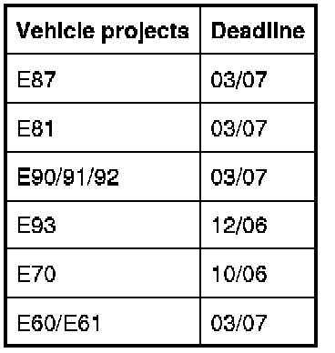
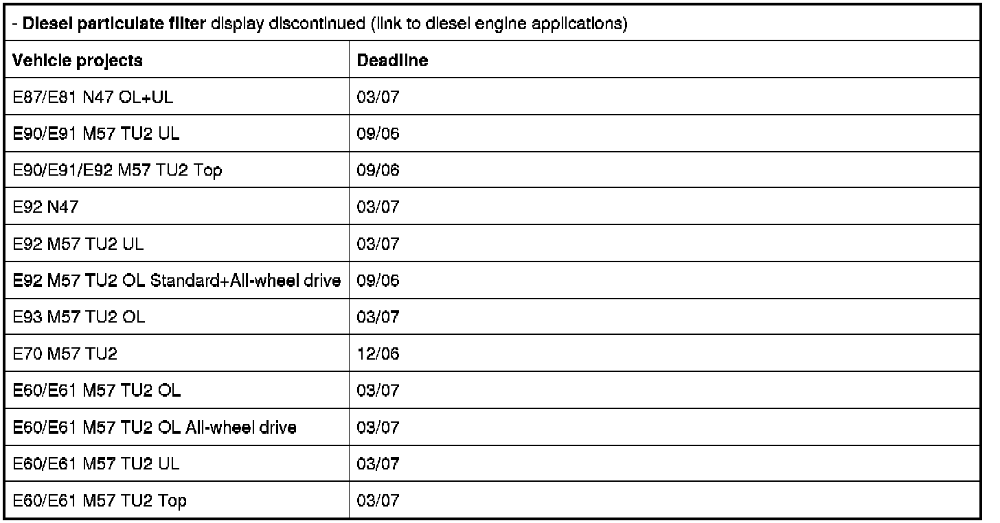

Modifications to "Condition Based Service" Maintenance System BMW
00 04 06 (148)
Modifications to "Condition Based Service" maintenance system
BMW
Background:
- Passenger compartment microfilter: Link to a multiple of the oil service.
- Spark plugs: Link to a multiple of the oil service.
- Diesel particulate filter: Critical range covered by Check Control.
- Exhaust emissions test: Cancellation in all regions except V6 China (can also be controlled manually via DIS Tester).
For precise coupling, please refer to:
- China
- V5
- V1, V3 and V4 Canada
- V4 USA
Date of introduction:
- Displays for interior microfilter, spark plugs and emissions test discontinued (revised encoding).

